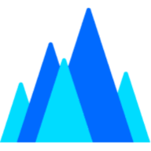
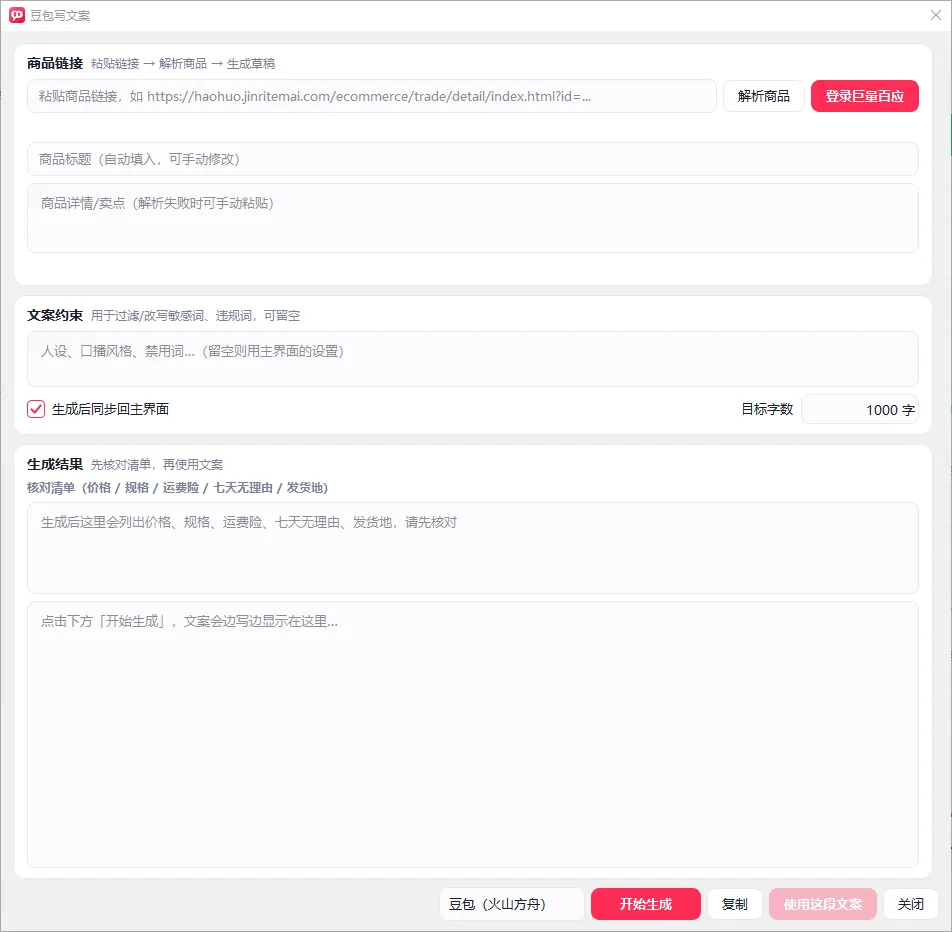
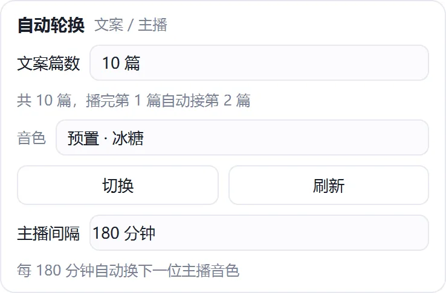
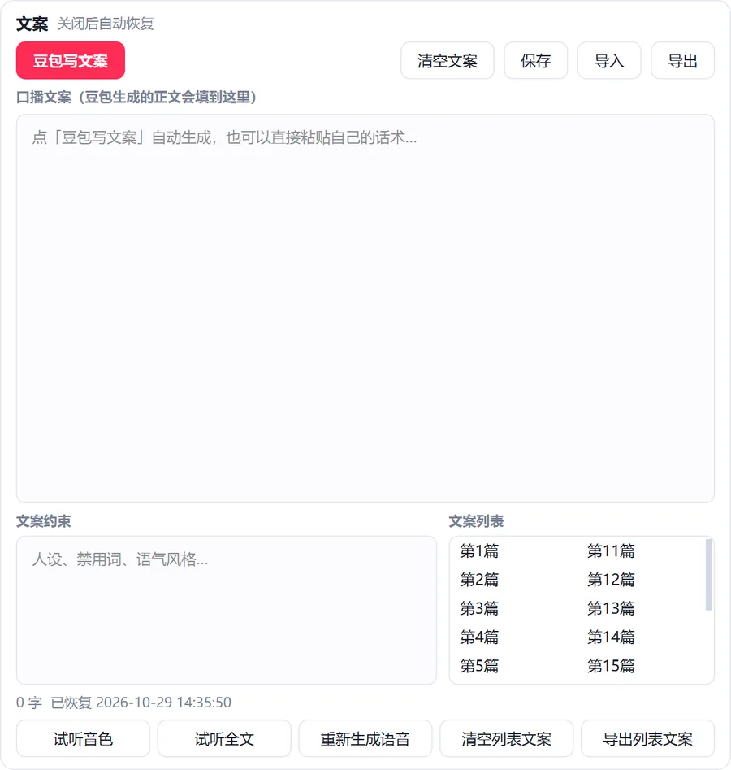
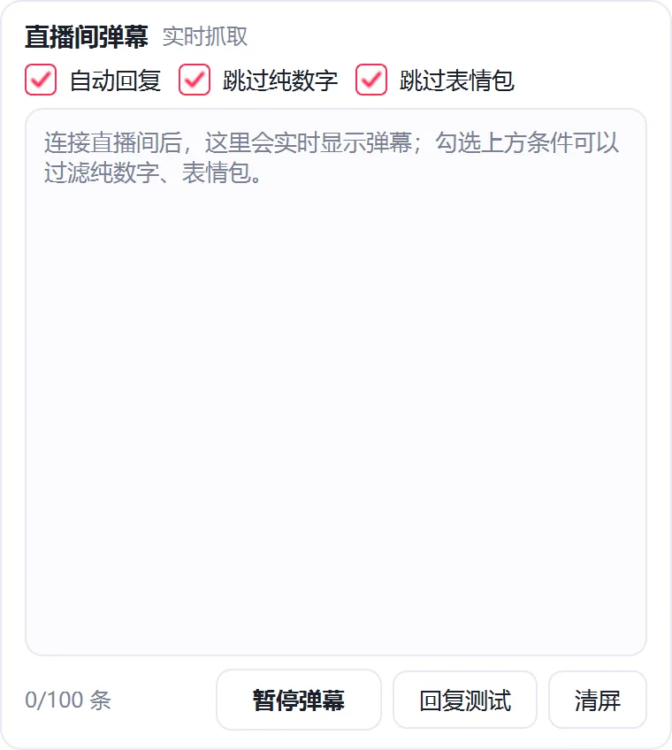

模型生态
全线接入全网主流大模型
不绑定单一模型，按场景自由切换 —— 国内头部大模型与全球主流模型全面就绪，能力随模型升级同步进化。
灵犀AI主播 DeepSeek
DeepSeek 豆包
豆包 OpenAI通义千问KIMI
OpenAI通义千问KIMI ClaudeGemini
ClaudeGemini
DeepSeek豆包
火山方舟OpenAI通义千问KIMIClaudeGemini从写稿、合成、播报到弹幕互动，直播口播的每一个环节都被 AI 接管。
接入国内头部大模型，粘贴商品链接秒级解析，按「场景 → 故事 → 卖点 → 人群 → 售后」六段式生成约 1000 字口播稿，附价格与规格核对清单，杜绝 AI 编造导致的直播事故。
大模型语音合成，预置多款音色，支持音色复刻。开播前提供音色试听、全文试听、回复测试等五种试听验收，未开播也能把声音调到满意。
实时接入直播间弹幕，AI 批量挑选最值得回复的 1~2 条生成回复并念出来，自动绑定当前商品上下文，绝不答非所问，也绝不重复回复。
设定 1~20 篇轮换，播到当前篇一半时后台自动生成并合成下一篇，读完零停顿接续；播完自动兜底至当日语音库随机播放，直播不断档。
合成语音与文案按日期自动归档，命名规范、同内容去重；AI 自动识别商品名重命名文件，支持搜索、预览、双击加载与一键导出。
整点随机话术报时活跃气氛；任意一句话实时转语音插播，插播结束后精准回到原讲解位置。中文数字自动转中文读法，「99 元」读作「九十九元」。
讲到哪件商品，直播间就弹出哪件讲解卡：AI 选品、自动避让已在讲解的商品、五重冷却闸门、复用同一个浏览器真实点击 —— 不注入脚本、不伪造请求、失败即停。
「讲解中」的商品卡是直播间最直接的转化入口。灵犀把它做成全自动：三种触发、AI 选品、五重冷却，
而这一切发生在你自己那个已登录的浏览器里 —— 不注入脚本、不伪造请求、失败即停。
兜底节拍 · 不是固定节拍
在设定的 3~10 分钟区间内 随机取值，每一轮都不一样。真人不会整点弹商品，随机才像人。
播报说到，商品就到
口播稿里出现「小助理」「展示一下」「给大家看看」「上链接」「小黄车」「点击下方」等 15 类话术，念到那一刻商品就弹出来。
观众一问，商品就上
约 60 个「明确指向商品」的问法命中即触发，含「185 的码」「xl 有吗」这类尺码口语；再交给 AI 复核是不是真在问商品，闲聊不弹。
你在设置里点名的商品，永远优先，不受其他规则覆盖。
当前文案讲的那件，改「最长公共子串」匹配标题，≥4 字即判定同一件。
列表只有一件时直接用，不问模型 —— 省 token，也不给它犹豫的机会。
文案与列表对不上，交大模型按「文案 + 最近 6 条弹幕」选最接近的一条。
模型超时、回复解析不出、列表里没相关商品 → 返回 -1，本次不弹并写日志。
平台风控盯的从来不是「点讲解」这个动作 —— 那本来就是中控台给运营点的按钮。真正被盯的是频率、模式、环境。 所以这里的设计原则只有一条：让每一次点击，在频率、时序、环境上都和真人无异。
复用你已登录的 Chrome 与中控台标签页，不新开实例、不开无头模式、不新建 profile —— 环境特征与真人完全一致。
走 CDP 的鼠标移动 → 按下 → 抬起，按住时长 60~140ms 随机。不调用 element.click()，因为它没有鼠标轨迹。
从「该弹」到「真点」之间随机等 0.8~2.5 秒。恒定 500ms 这种准点响应，才是最刺眼的机器指纹。
只用 Runtime.evaluate 读 DOM、算坐标，不修改 DOM、不注入自定义脚本、不构造内部接口请求与签名。
点击后 3 秒内没出现「讲解中」就放弃并记录原因。循环重试是风控系统最喜欢的特征，一条都不留。
只在开播中执行，停播立即关闭并清空冷却；软件启动时默认关闭，开关永远是用户的决定。
同一件商品 300 秒内不重复讲解；列表只有一件商品时自动拉长到 600 秒。
任意两次弹窗之间至少隔 60 秒，秒级连点从机制上就不存在。
由观众提问触发的弹窗，比定时更保守 —— 观众刷屏时也不会连着弹。
一小时最多 20 次，超了直接跳过并写日志；手动「立即弹窗」也只受这一条约束。
以上闸门由独立的策略模块统一裁决（可单测），所有触发通道都必须过同一道冷却闸门。 要弹的那件已经在讲解中时，它会自动改弹另一件没在讲解的商品，而不是空转一轮。
运行日志实样：成功绿 / 失败红 / 跳过琥珀，每次弹窗都带耗时与原因，出问题可回溯。
读取商品列表同样做了工程处理：连上中控台后自动最大化浏览器窗口，读取前先滚回列表顶部， 再按 70% 视口高度逐屏下扫（最多 12 屏），扫完还原你原来的滚动位置 —— 懒加载列表也能读全。 平台改版导致选择器失效时，「导出页面结构」一键导出商品区 HTML，几天内即可完成适配。

「AI 写文案」把内容生产压缩成一步：链接进去，口播稿出来。
为非技术用户设计：只需填入 API Key，其余全部自动化。
双击安装包，自定义安装目录，免管理员权限，装完即可运行。
内置国内主流大模型与语音平台官方地址，误填自动纠正；每组提供「测试连接」与「官方默认」一键还原。
扫码一次即完成直播间实时对接，约 2 秒读取账号与直播间信息，稳定可靠、不触发风控。
粘贴商品链接 → 解析 → 生成千字口播与核对清单 → 人工确认 → 合成语音。
选择输出设备，点「开始直播」自动连弹幕、合成语音、循环播报，进入无人值守状态。
多项核心技术难题被逐一攻克，成就 7×24 小时无人值守的稳定性与极致速度。
多链路冗余接入、自动择优切换，断线秒级自动重连，历史弹幕自动补发；直播间切换自动重新识别，实时AI弹幕语音播报！
商品链接秒级解析完成，千字口播文案首字响应 0.8 秒、流式实时上屏，全程不卡顿；生成不足自动二次扩写，长文案一口气写完。
多任务并发调度 + 智能限流治理，千字文案语音数十秒内合成完毕；播放引擎多队列调度，插播结束精准回到原讲解位置，零停顿、零卡顿。
多篇文案无缝轮换，播到一半后台已备好下一篇；全部播完自动切换语音库智能轮播兜底，直播永不断档，长时间运行零崩溃。
弹幕批量智能挑选，只回最值得回的；回复自动绑定当前商品上下文，绝不答非所问；内容级去重，绝不重复回复，且零额外大模型开销。
密钥与凭证本地加密存储，数据不出本机；内置自动更新，能力持续迭代升级，一次部署长期受益。
国内顶尖大模型：DeepSeek × 火山方舟（OpenAI 兼容协议） · 语音合成
不绑定单一模型，按场景自由切换 —— 国内头部大模型与全球主流模型全面就绪，能力随模型升级同步进化。
DeepSeek豆包
火山方舟OpenAI通义千问KIMIClaudeGemini三栏布局、运行状态实时可视化 —— 功能在跑、播到第几篇，都一眼看出来。



软件保持高频迭代，以下为近期版本的核心技术升级。
免安装包，双击即用，首次启动自动检查新版。
系统要求：Windows 10 / 11（64 位），需已安装Chrome浏览器。
Windows 7存在兼容性问题，需升级 Windows 10 或 Windows 11 后使用。
软件购买、使用咨询、问题反馈与技术对接，欢迎随时联系。